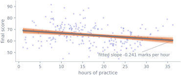
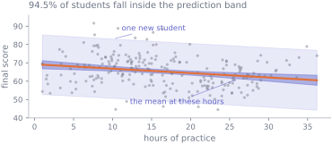
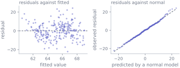

11. Simple linear regression
Statistics · Unit 11
Why this unit is here
S10 compared groups. Regression does the same job when the explanatory variable is a number rather than a label — and it gives you the answer in the units people actually want: not “these groups differ”, but “each extra hour is worth this many marks, give or take this much”.
M11 already showed how the line is computed. This unit supplies the part that makes it a statistical statement rather than an arithmetic one: the slope is an estimate, it has a standard error, and there is a specific list of assumptions under which that standard error means what it says. It also supplies the two numbers people most often misuse — \(R^2\) and the prediction interval.
11.1 Before you start
You should be able to:
- fit a straight line by least squares and say what it minimises — M11;
- build a confidence interval and read a \(p\)-value — S9, S8;
- interpret a correlation and say what it cannot see — S3.
Quick check. A fitted line is \(\hat{y} = 70 - 0.24x\), where \(y\) is a final score in marks and \(x\) is hours of practice. What are the units of \(-0.24\), and what does the 70 mean?
TipShow the answer
The slope is in marks per hour: the fitted line falls by 0.24 marks for each extra hour. The intercept is the fitted value at \(x = 0\) — 70 marks for a student who practised not at all.
Whether that intercept means anything depends on whether \(x = 0\) is inside the range of the data. Here the smallest observed practice time is one hour, so 70 is an extrapolation, and one to be careful with.
11.2 The idea
The model behind a fitted line is
\[ y_i = \beta_0 + \beta_1 x_i + \varepsilon_i , \]
where \(\beta_0\) and \(\beta_1\) are fixed unknown numbers — parameters, in the sense of S1 — and \(\varepsilon_i\) is everything else: measurement noise, omitted causes, individual variation. The \(\varepsilon_i\) are assumed to have mean zero, the same variance for every \(i\), and to be independent of each other.
Least squares gives you \(\hat{\beta}_0\) and \(\hat{\beta}_1\), and the crucial point of this unit is that those hats are doing the same work they did in S1: they are estimates, computed from one sample, and a different sample would have produced different ones.
Every one of those faint lines is a slope somebody could have reported, from data generated the same way. Some are noticeably steeper than the fit and some are noticeably flatter. Quantifying that fan is what the rest of the unit does.
11.3 The mechanics
The estimates
From M11, least squares gives
\[ \hat{\beta}_1 = \frac{\sum (x_i - \bar{x})(y_i - \bar{y})}{\sum (x_i - \bar{x})^2} = r\,\frac{s_y}{s_x}, \qquad \hat{\beta}_0 = \bar{y} - \hat{\beta}_1 \bar{x} . \]
The second form for the slope is worth carrying: it is the correlation of S3, converted from unitless into marks-per-hour by the ratio of the two standard deviations. Correlation and slope carry the same sign and answer different questions.
The uncertainty
Let \(s_e\) be the residual standard deviation, the typical size of a vertical miss:
\[ s_e = \sqrt{\frac{1}{n-2}\sum_{i=1}^{n} (y_i - \hat{y}_i)^2 } . \]
The divisor is \(n - 2\) because two parameters have been estimated from the same data — the same argument that gave S2 its \(n-1\). Then
\[ \text{SE}(\hat{\beta}_1) = \frac{s_e}{\sqrt{\sum (x_i - \bar{x})^2}} . \]
Read what makes a slope precise. Small residuals help, obviously. So does a large \(n\). And so does a wide spread of \(x\) — the denominator is the total spread of the explanatory variable, so measuring people whose practice hours vary a lot pins the slope down far better than measuring the same number of people who all practised about the same amount. That is a design lesson, and it is invisible unless you look at the formula.
The interval and test then follow the pattern of S9 exactly:
\[ \hat{\beta}_1 \pm t^{*}_{n-2}\,\text{SE}(\hat{\beta}_1), \qquad t = \frac{\hat{\beta}_1 - 0}{\text{SE}(\hat{\beta}_1)} . \]
\(R^2\), and what it is not
\[ R^2 = 1 - \frac{\sum (y_i - \hat{y}_i)^2}{\sum (y_i - \bar{y})^2} \]
— the proportion of the variance in \(y\) that the fitted line accounts for. In simple regression it is exactly the square of the correlation.
Three things it does not tell you. It does not say the model is correct: a curved relationship can produce a respectable \(R^2\) while the line is wrong everywhere. It does not say the slope is useful: a slope can be precisely estimated, obviously real, and account for very little of the variation, which is the normal situation with human data. And it does not say anything about cause.
A low \(R^2\) with a tight interval on the slope means “this variable matters a little, and we know that quite precisely” — a perfectly respectable finding, and the one this unit’s worked example produces.
Two kinds of interval
Asking “what is the fitted value at \(x_0\)?” has two different answers, and confusing them is the commonest error in applied regression.
- A confidence interval for the mean response says where the average \(y\) for everyone at \(x_0\) lies. It shrinks as \(n\) grows.
- A prediction interval for a new observation says where one new individual at \(x_0\) is likely to fall. It carries the residual scatter as well, so it stays wide however much data you collect.
\[ \text{SE}_{\text{mean}} = s_e\sqrt{\frac{1}{n} + \frac{(x_0-\bar{x})^2}{\sum(x_i-\bar{x})^2}}, \qquad \text{SE}_{\text{pred}} = s_e\sqrt{1 + \frac{1}{n} + \frac{(x_0-\bar{x})^2}{\sum(x_i-\bar{x})^2}} \]
The extra 1 under the second root is the individual’s own noise, and it is usually the dominant term.
The assumptions, and how to check them
| assumption | how it fails | how to look |
|---|---|---|
| the relationship is linear | curvature | residuals against fitted values |
| constant variance | a fan shape | residuals against fitted values |
| errors independent | clustering, time trends | know the design; plot in time order |
| errors roughly normal | skew, heavy tails | Q-Q plot of residuals |
Only the last is about normality, and it is the least important of the four: the intervals rely on the sampling distribution of \(\hat{\beta}_1\), which S7’s central limit theorem makes approximately normal for moderate \(n\) even when the errors are not. The exception is the prediction interval: one individual’s own error is never averaged away, so its shape matters at any \(n\). Independence is the one that will hurt you most and shows up in no plot.
11.4 Worked example
How much is an hour of practice worth?
import numpy as np
import pandas as pd
from scipy import stats
cohort = pd.read_csv("data/cohort.csv")
scored = cohort[cohort["final_score"].between(0, 100)]
hours = scored["hours_practice"].to_numpy()
score = scored["final_score"].to_numpy()
n = hours.size
fit = stats.linregress(hours, score)
print(f"n = {n}")
print(f"slope {fit.slope:+.4f} marks per hour (se {fit.stderr:.4f})")
print(f"intercept {fit.intercept:+.4f} marks (se {fit.intercept_stderr:.4f})")
t_star = stats.t.ppf(0.975, n - 2)
print(f"95% CI for the slope: ({fit.slope - t_star*fit.stderr:+.4f}, "
f"{fit.slope + t_star*fit.stderr:+.4f})")
print(f"t = {fit.slope/fit.stderr:.4f} p = {fit.pvalue:.3g} R^2 = {fit.rvalue**2:.4f}")n = 238
slope -0.2408 marks per hour (se 0.0652)
intercept +69.2261 marks (se 1.1948)
95% CI for the slope: (-0.3693, -0.1123)
t = -3.6921 p = 0.000276 R^2 = 0.0546The reportable sentence: across the cohort, each additional hour of practice goes with 0.24 marks fewer on the final score (95% CI 0.11 to 0.37 marks lower), and practice hours account for 5.5% of the variation in scores.
Three separate things are true of that sentence and worth separating.
The slope is negative and the interval excludes zero. Noise alone would rarely produce that — though, as S9 showed, rarely is not never.
The effect is small and the fit is poor. \(R^2 = 0.055\) means practice hours explain about a twentieth of the variation. Read together with the interval, the finding is “a clear but modest association, estimated reasonably precisely” — which is what most findings about people look like.
It is not a statement about what practice does. S1 established that the sign reverses inside every background group. The fit above is a correct summary of the pooled cloud and a bad guide to any student’s decision.
fitted = fit.intercept + fit.slope * hours
residuals = score - fitted
s_e = np.sqrt((residuals**2).sum() / (n - 2))
sxx = ((hours - hours.mean())**2).sum()
print(f"residual sd s_e {s_e:.4f} (sd of the scores themselves {score.std(ddof=1):.4f})")
print(f"se by hand {s_e/np.sqrt(sxx):.6f}")
print(f"se from scipy {fit.stderr:.6f}")
print(f"R^2 by hand {1 - (residuals**2).sum()/((score - score.mean())**2).sum():.6f}")residual sd s_e 8.1693 (sd of the scores themselves 8.3841)
se by hand 0.065219
se from scipy 0.065219
R^2 by hand 0.054606The residual standard deviation is 8.17 against the scores’ own 8.38. Knowing a student’s practice hours has bought you almost nothing about where they will land — which is the same fact as \(R^2 = 0.055\), in marks rather than as a proportion.
The two intervals, drawn.

x0 = 20.0
leverage0 = 1/n + (x0 - hours.mean())**2 / sxx
predicted = fit.intercept + fit.slope * x0
print(f"at {x0:.0f} hours, the fitted value is {predicted:.2f} marks")
print(f" 95% CI for the mean score there : "
f"({predicted - t_star*s_e*np.sqrt(leverage0):.2f}, "
f"{predicted + t_star*s_e*np.sqrt(leverage0):.2f})")
print(f" 95% prediction for one student : "
f"({predicted - t_star*s_e*np.sqrt(1 + leverage0):.2f}, "
f"{predicted + t_star*s_e*np.sqrt(1 + leverage0):.2f})")at 20 hours, the fitted value is 64.41 marks
95% CI for the mean score there : (63.27, 65.55)
95% prediction for one student : (48.28, 80.54)The mean is pinned down to about a mark either way. An individual student is pinned down to about sixteen marks either way. Quoting the first when you meant the second is the standard way a regression is oversold.
Check the assumptions.

No curvature, no fan, and residuals that track a normal model closely. Linearity, constant variance and approximate normality are all in reasonable shape.
Neither plot can check the other two things that matter. Independence is a property of the design, not of the residuals: you establish it by knowing how the data were collected. And no residual plot at all can tell you that a variable is missing from the model — the fit can look immaculate and still be measuring something other than what you meant. That is precisely this dataset’s situation, and the next section shows what it costs.
11.5 Try it yourself
Exercise 1 A regression of weekly sales (in £000) on advertising spend (in £000) gives \(\hat{\beta}_1 = 3.2\) with a standard error of 1.5, from \(n = 40\) shops.
- Give an approximate 95% interval for the slope.
- Interpret the slope in words, with units.
- The \(R^2\) is 0.11. What does that add?
TipShow the solution
With \(t^{*}_{38} \approx 2.02\): \(3.2 \pm 2.02 \times 1.5 = 3.2 \pm 3.03\), giving \((0.17, 6.23)\). Zero is outside — just.
Each extra £1,000 of advertising goes with about £3,200 more in weekly sales, on average across shops. The interval says the data are consistent with anything from £170 to £6,230, which spans “not worth doing” and “extremely worth doing”.
\(R^2 = 0.11\) says advertising spend accounts for 11% of the variation in sales between shops. The other 89% is location, size, season, competition and everything else. It does not weaken the slope estimate, and it does warn you that predicting one shop’s sales from its advertising alone will be poor.
(The three numbers are not independent, incidentally: in simple regression \(t^2 = (n-2)R^2/(1-R^2)\), so a slope, its standard error, the sample size and \(R^2\) determine each other. Here \(t = 3.2/1.5 = 2.13\) and \(R^2 = 2.13^2/(2.13^2 + 38) = 0.11\), which is where the figure came from.)
Exercise 2 Which of these would you expect to make the standard error of a fitted slope smaller?
- Collecting more observations.
- Choosing \(x\) values spread over a wider range.
- Reducing measurement noise in \(y\).
- Adding a constant to every \(x\).
TipShow the solution
(a), (b) and (c). Look at \(\text{SE}(\hat{\beta}_1) = s_e / \sqrt{\sum (x_i - \bar{x})^2}\):
- more observations add terms to the sum in the denominator — though only if they add spread: an observation placed exactly at \(\bar{x}\) contributes nothing to it, and one with a wild \(y\) can inflate \(s_e\) enough to make the standard error worse. In the ordinary case of more observations across the same range of \(x\), it shrinks;
- a wider spread of \(x\) makes each term larger — this is often the cheapest of the three and the one people forget;
- less noise in \(y\) shrinks \(s_e\).
(d) does nothing. \(\sum(x_i - \bar{x})^2\) is unchanged by a shift, because \(\bar{x}\) shifts with it. The slope estimate is unchanged too; only the intercept moves, since it is the fitted value at the new \(x = 0\).
A caution on (b): widening the range only helps if the relationship really is straight over the wider range. Extending the \(x\) values into territory where the line stops being a good model buys precision in the estimate of the wrong thing.
Exercise 3 Using this unit’s fitted line, a student who has practised 20 hours is predicted to score 64.4 marks.
- A colleague says “so a student who practises 20 hours will get about 64”. What is wrong?
- The same line predicts 69.2 marks at zero hours. What is wrong with that?
- Would it be reasonable to advise a student to practise less?
TipShow the solution
It confuses the mean response with an individual prediction. The average score among students at 20 hours is pinned down to about \((63.3, 65.6)\). A single student’s score has a 95% prediction interval of about \((48.3, 80.5)\) — a range of 32 marks, covering a fail and a first. The fitted value is a centre, not a forecast.
It is an extrapolation. No student in the data practised fewer than one hour, so nothing in the sample speaks to zero hours. The intercept is a mathematical feature of the line, not an estimate of anything observed.
No, and this is the important one. The fit describes an association across a cohort in which practice hours are entangled with prior background: students who arrive stronger practise less. Within every background group the slope is positive, at about one mark per hour. Advising an individual requires the within-group relationship, and even that is observational — students chose their own hours. S12 takes this apart properly.
11.6 Check it in Python
First, that the slope really is the correlation rescaled, and that the “by hand” standard error matches the library:
r = np.corrcoef(hours, score)[0, 1]
print(f"slope from r * sy/sx {r * score.std(ddof=1) / hours.std(ddof=1):+.6f}")
print(f"slope from scipy {fit.slope:+.6f}")
print(f"R^2 from r squared {r**2:.6f} from scipy {fit.rvalue**2:.6f}")slope from r * sy/sx -0.240793
slope from scipy -0.240793
R^2 from r squared 0.054606 from scipy 0.054606Second, the claim that the standard error measures the fan in the opening figure. Resample the students, refit, and compare the spread of the resulting slopes with the formula:
rng = np.random.default_rng(11)
slopes = np.empty(4000)
for i in range(slopes.size):
pick = rng.integers(0, n, n)
slopes[i] = stats.linregress(hours[pick], score[pick]).slope
print(f"sd of 4000 resampled slopes {slopes.std():.6f}")
print(f"formula se {fit.stderr:.6f}")
print(f"bootstrap 95% interval ({np.quantile(slopes, 0.025):+.4f}, "
f"{np.quantile(slopes, 0.975):+.4f})")
print(f"formula 95% interval ({fit.slope - t_star*fit.stderr:+.4f}, "
f"{fit.slope + t_star*fit.stderr:+.4f})")sd of 4000 resampled slopes 0.065154
formula se 0.065219
bootstrap 95% interval (-0.3724, -0.1186)
formula 95% interval (-0.3693, -0.1123)Two completely different routes — one algebraic, one brute force — agreeing to three decimal places.
Now the check that fails, and it is the one this dataset exists to teach. A pooled slope is not the slope within any group:
grouped = scored.dropna(subset=["background"])
by_group = {name: stats.linregress(part["hours_practice"], part["final_score"]).slope
for name, part in grouped.groupby("background")}
for name, slope in by_group.items():
print(f" {name:<24} {slope:+.4f} marks per hour")
assert all(slope < 0 for slope in by_group.values()), (
f"the pooled slope is {fit.slope:+.4f}, but every one of the "
f"{len(by_group)} within-group slopes is positive"
) Computing +0.6624 marks per hour
Engineering +0.8454 marks per hour
Life sciences +1.1526 marks per hour
Mathematics or Physics +1.0112 marks per hour
Social sciences +1.3445 marks per hour--------------------------------------------------------------------------- AssertionError Traceback (most recent call last) Cell In[9], line 7 4 for name, slope in by_group.items(): 5 print(f" {name:<24} {slope:+.4f} marks per hour") ----> 7 assert all(slope < 0 for slope in by_group.values()), ( 8 f"the pooled slope is {fit.slope:+.4f}, but every one of the " 9 f"{len(by_group)} within-group slopes is positive" 10 ) AssertionError: the pooled slope is -0.2408, but every one of the 5 within-group slopes is positive
Pooled, the line falls by 0.24 marks an hour. Within each background it rises by between 0.66 and 1.34 marks an hour. Both are correct least-squares fits to the data in front of them.
Adding the background information to the model — as M11 does with the arrival diagnostic — flips the sign of the practice coefficient:
design = np.column_stack([np.ones(n), hours, scored["diagnostic_score"].to_numpy()])
theta, *_ = np.linalg.lstsq(design, score, rcond=None)
print(f"score ~ 1 + hours slope {fit.slope:+.4f}")
print(f"score ~ 1 + hours + diagnostic slope {theta[1]:+.4f}")score ~ 1 + hours slope -0.2408
score ~ 1 + hours + diagnostic slope +0.9156Same data, same method, opposite sign. Which coefficient answers your question depends entirely on what you were asking, and nothing in the output tells you which one you wanted.
11.7 Common wrong turns
Where this usually goes wrong
- Reporting a slope without an interval
- A slope is an estimate. “0.24 marks per hour” and “0.24 marks per hour, 95% CI 0.11 to 0.37” are different claims, and only the second can be argued with.
- Confusing a confidence band with a prediction band
- The first is about the mean at a given \(x\) and is narrow; the second is about one new individual and is much wider, because it carries the residual scatter. In this unit’s fit they differ by a factor of about fourteen.
- Reading a low \(R^2\) as “no relationship”
- \(R^2 = 0.055\) here, with a slope whose interval excludes zero. Small and real are compatible, and with human data they are the normal case.
- Reading a high \(R^2\) as “the model is right”
- A curved relationship can produce a high \(R^2\) with a line that is wrong everywhere. Look at the residuals against the fitted values, always.
- Interpreting the intercept outside the data
- The intercept is the fitted value at \(x = 0\). If no observation is near zero, it is an extrapolation and usually meaningless — sometimes physically impossible.
- Predicting outside the range of \(x\)
- The line is a summary of the region you observed. Nothing in the data says the relationship continues, and the further out you go the more confidently wrong the prediction becomes.
- Reading the slope as an effect
- A regression coefficient describes an association in the data you fitted, given the other variables in the model. Making it causal needs a design that supports the claim, not a smaller \(p\)-value.
11.8 Check yourself
Answers are at the foot of the page. Give a reason as well as an answer.
A fitted slope is \(2.0\) with standard error \(0.5\), from \(n = 100\). Which is true?
- The relationship explains most of the variation
- A 95% interval for the slope is roughly \((1.0, 3.0)\)
- The correlation is 2.0
- Each unit of \(x\) causes 2 units of \(y\)
A clear slope need not explain much. Work out \(t = 2.0/0.5\), then use \(R^2 = t^2/(t^2 + n - 2)\).
A correlation always lies between \(-1\) and \(1\); a slope is measured in units of \(y\) per unit of \(x\).
A regression describes an association. What would you need before calling it a cause?
- You want a more precise estimate of a slope but cannot collect more data. What else could you change about the design?
- Two regressions have identical slopes and identical standard errors, but \(R^2\) of 0.9 and 0.2. What differs?
- Why does a prediction interval not shrink towards zero width as \(n\) grows?
- The cohort’s pooled slope is \(-0.24\) and every within-background slope is positive. Which is the “real” relationship between practice and score?
TipShow the answers
(b). With \(n = 100\) the multiplier is close to 2, so the interval is about \(2.0 \pm 1.0\). (a) is false, and you can check it: \(t = 2.0/0.5 = 4\), so \(R^2 = 4^2/(4^2 + 98) \approx 0.14\) — a clear relationship that explains little of the variation; (c) confuses the slope with the correlation, which cannot exceed 1; (d) upgrades an association to a cause, which no regression output can license.
Spread the \(x\) values further apart. The standard error is \(s_e/\sqrt{\sum (x_i - \bar{x})^2}\), so choosing observations across a wider range of \(x\) shrinks it without a single extra data point. Reducing measurement noise in \(y\) works too. The caveat from Exercise 2 stands: the relationship must stay straight over the wider range.
The residual scatter relative to the spread of \(y\). The regression with \(R^2 = 0.2\) has much more variation in \(y\) that the line does not account for. Since the standard errors match, both slopes are estimated equally precisely — which is a clean demonstration that \(R^2\) and the precision of a coefficient are separate things.
Because it contains the individual’s own noise. As \(n\) grows the line is pinned down and the mean-response band shrinks towards nothing, but a new student still scatters about that line with standard deviation \(s_e\). The prediction interval converges to roughly \(\hat{y} \pm 2 s_e\), not to a point.
Neither is “the” relationship; they answer different questions. The pooled slope describes the cohort as a whole, in which practice hours partly stand in for prior background. The within-group slopes describe students compared with others who arrived in a similar position. For advising a student the within-group figure is much closer to the question — and, since nobody assigned practice hours, still not a causal answer. S12 is next.